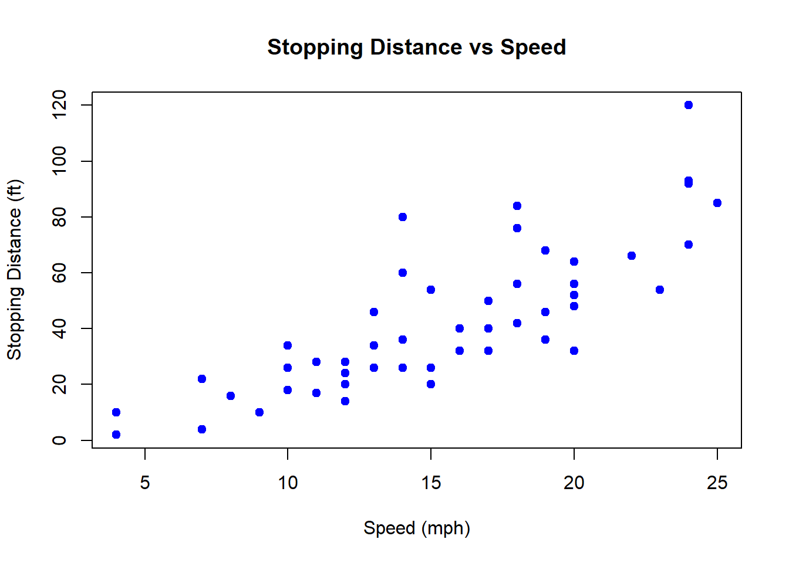

Appendix D Workbook Week 3: Models and Growth
D.1 Learning Goals
In this chapter, you’ll build both conceptual understanding and practical modeling skills.
By the end, you should be able to:
- Explain the structure of a mathematical model
- Identify variables, parameters, functions, initial conditions, and boundary conditions in an environmental system.
- Construct a conceptual model
- Create a diagram or influence map showing the main components and feedbacks in a system (e.g., a fishery, carbon cycle, or pollutant pathway).
- Translate that conceptual model into a quantitative form—an equation or simulation—that captures its essential dynamics.
- Create a diagram or influence map showing the main components and feedbacks in a system (e.g., a fishery, carbon cycle, or pollutant pathway).
- Simulate system behavior
- Work directly with a provided R model (linear, exponential, or logistic) to explore how changes in parameters such as the growth rate (\(r\)) or carrying capacity (\(K\)) affect system outcomes.
- Fit models to data
- Use observational data (e.g., cod fishery population time series) to estimate parameters, visualize model fits, and interpret model accuracy (RMSE, residuals).
- Interpret model parameters ecologically
- Describe what each parameter represents in real terms—e.g., how \(r\) relates to reproduction or how \(K\) reflects habitat limits.
- Explore uncertainty and sensitivity
- Conduct parameter sweeps and “what-if” simulations to see which assumptions most influence model predictions.
- Evaluate models as decision tools
- Use the logistic-harvest model to test management scenarios (e.g., sustainable vs. overharvest conditions).
- Discuss the implications of stochasticity (“bad years”) for population resilience.
- Use the logistic-harvest model to test management scenarios (e.g., sustainable vs. overharvest conditions).
- Reflect on the modeling process
- Compare your conceptual model with the mathematical one and explain what each form helps you understand.
- Articulate how model simplicity versus realism affects insight and decision-making.
- Compare your conceptual model with the mathematical one and explain what each form helps you understand.
üí° Purpose of this section:
You’ll not only learn how to fit and simulate models, but also how to think like a modeler—starting from a conceptual diagram of a system, translating it into equations, running simulations, and interpreting what the results tell us about environmental processes and management trade-offs.
Working Definitions
In your own words define the following
Variable
Parameter
Function
Initial Condition
Boundary Condition
Activity: Build a Conceptual Model — “Water Levels in Lake Washington”
üéØ Purpose: To practice thinking like a modeler by building a conceptual model of water balance in Lake Washington. You‚Äôll identify the main inputs, outputs, controls, and feedbacks that determine how lake levels rise and fall ‚Äî just as we do in environmental modeling.
üåä Background: Lake Washington‚Äôs water level is managed through the Hiram M. Chittenden (Ballard) Locks, which connect the lake to Puget Sound. Its level fluctuates with precipitation, river inflow, groundwater exchange, evaporation, and controlled outflow to the Locks. In summer, levels are lowered to protect dock structures and fish migration; in winter, levels rise naturally with rainfall. In short ‚Äî Lake Washington is a dynamic system influenced by climate, management, and human use.
ü߆ Part 1: Brainstorm the System: In small groups, sketch a conceptual model (boxes and arrows) of Lake Washington‚Äôs water balance.
Stocks (state variables):
Inflows:
Outflows:
Drivers and Controls:
üîÑ Part 2: Identify Feedbacks
Positive feedbacks (reinforcing):
Negative feedbacks (stabilizing):
Label feedbacks with (+) or (–) arrows in your diagram.
üß© Part 3: Translate to a Quantitative Model
Now imagine you had to model lake level \(L(t)\) mathematically.
- Try an write a functional relationship for the system.
- Identify your output variable and its relation to the input variables
üí¨ Part 4: Reflect
Discuss as a group:
- Which factors are natural and which are human-controlled?
- How might climate change affect this system?
- How could your conceptual model inform management decisions about flood control, salmon passage, or recreation?
- If you were to create a simulation model of this system - what kind of model category would it fall into?
- If you were to simulate this system in R, what assumptions would you need to make?
üí° Takeaway:
Conceptual models help simplify complex systems like Lake Washington into a few key relationships.
Before we ever write an equation or a line of code, conceptual modeling helps us clarify what processes matter — and how they interact.
Introduction to Curve Fitting
In science and engineering, we often collect data that show a clear trend — but rarely follow a perfect mathematical formula. Curve fitting is the process of finding a mathematical function that best describes the relationship between variables in a dataset.
By fitting a curve, we can:
- Summarize complex data with a simple equation.
- Estimate values between or beyond measured points (interpolation and extrapolation).
- Compare theoretical models to real-world observations.
- Identify patterns that reveal underlying processes — for example, exponential population growth, logistic saturation, or seasonal oscillations.
Curve fitting bridges the gap between data and models. It allows us to test hypotheses (“Does this population follow logistic growth?”), estimate parameters (like growth rate or carrying capacity), and assess how well our chosen model represents reality.
How Fitting Is Achieved
Curve fitting involves adjusting the parameters of a chosen mathematical model so that it best matches the observed data. The goal is to minimize the difference between the model’s predicted values and the actual data points — these differences are called residuals.
The most common method is least squares fitting, which minimizes the sum of the squared residuals. For a dataset with observed values \(y_i\) and model predictions \(\hat{y}_i\), the sum of squared errors (SSE) is:
\[ SSE = \sum_{i=1}^{n} (y_i - \hat{y}_i)^2 \]
The fitting process adjusts model parameters (such as slope, intercept, or growth rate) to make this SSE as small as possible.
A related measure is the Root Mean Square Error (RMSE), which provides an interpretable measure of average error in the same units as the data:
\[ RMSE = \sqrt{\frac{1}{n} \sum_{i=1}^{n} (y_i - \hat{y}_i)^2} \]
While the least squares method minimizes the total squared error, the RMSE summarizes how far, on average, the predictions are from the observed data. Lower RMSE values indicate a better fit.
In practice, curve fitting tools in R, Python, or MATLAB use numerical optimization algorithms to minimize SSE or RMSE automatically, allowing us to identify the parameters that best describe the observed trend.
Curve Fitting Example - CO2
# Load data, skipping metadata lines that start with '#'
co2_data <- read.table("Models/data/co2_data.txt",
header = FALSE,
comment.char = "#",
col.names = c("Year", "Month", "DecimalDate",
"CO2_Monthly", "CO2_Deseason",
"NumDays", "StdDev", "Uncertainty"))
# Check the first few rows
head(co2_data)## Year Month DecimalDate CO2_Monthly CO2_Deseason NumDays StdDev Uncertainty
## 1 1958 3 1958.203 315.71 314.44 -1 -9.99 -0.99
## 2 1958 4 1958.288 317.45 315.16 -1 -9.99 -0.99
## 3 1958 5 1958.370 317.51 314.69 -1 -9.99 -0.99
## 4 1958 6 1958.455 317.27 315.15 -1 -9.99 -0.99
## 5 1958 7 1958.537 315.87 315.20 -1 -9.99 -0.99
## 6 1958 8 1958.622 314.93 316.21 -1 -9.99 -0.99library(ggplot2)
ggplot(co2_data, aes(x = DecimalDate, y = CO2_Monthly)) +
geom_line(color = "steelblue") +
labs(title = "Mauna Loa C02 Record",
x = "Year",
y = expression("CO"[2]*" concentration (ppm)")) +
theme_minimal()
Fit a linear model By Eye
- Open and run curve_fit_co2_1.R
- Try to fit a trend line?
- What would make this task easier?
Fit a linear model By Eye Using Residuals
- Open and run curve_fit_co2_2.R
- How do the residuals help?
- What are you aiming for?
Fit a linear model to a Subset of the Data
- Open and run curve_fit_co2_3.R
- This app includes a magic butting that fits the parameters for you.
- Play around, see if you can fit a line to the last 10 years
- What is happening to the residuals?
- Ideas on how to fix this?
Fit an exponential model to a Subset of the Data
- Open and run curve_fit_co2_4.R
- Play around, see if you can fit a model to the last 10 years
- What is happening to the residuals?
- Ideas on how to fix this?
Fit an complex model
- Open and run curve_fit_co2_5.R
We’ve been layering complexity onto this model
Adding a sinusoid is a modeling trick - given the residuals have a sinusoidal shape, that gives us a hint that whatever we are ‘missing’ in our model could be represented as a sinusoid.
Play around